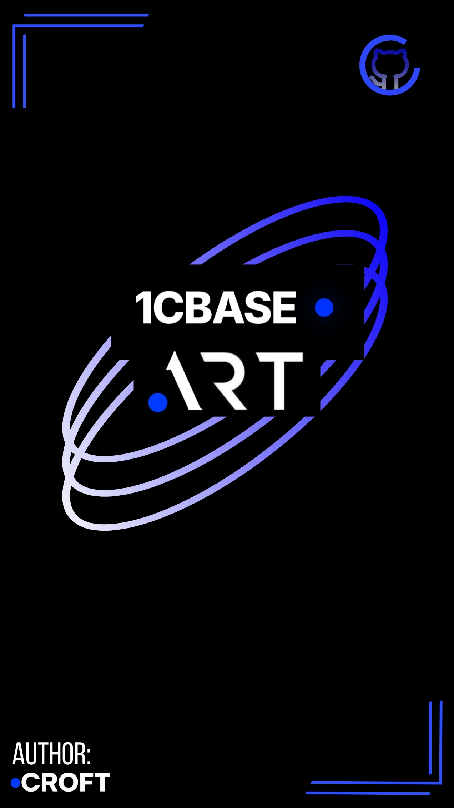
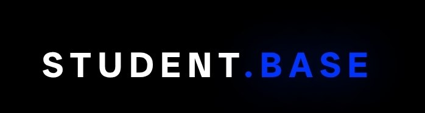

Привет, я A.R.T (Croft). Системный администратор, программист и студент. Люблю разбираться в том, как всё работает — от микросхем до кода. Создаю полезные инструменты и базы знаний.
МОЙ GITHUB
Открытая база знаний для разработчиков 1С:Предприятие 8.3+

Единый справочник по всем предметам, темам и курсам.
Конспекты лекций, схемы, вопросы к экзаменам и примеры задач.
CLI-утилита на TypeScript, которая сканирует директорию и автоматически генерирует .gitignore по стеку проекта.
База наработок и практик по веб-разработке. Фундаментальные знания для кодинга.